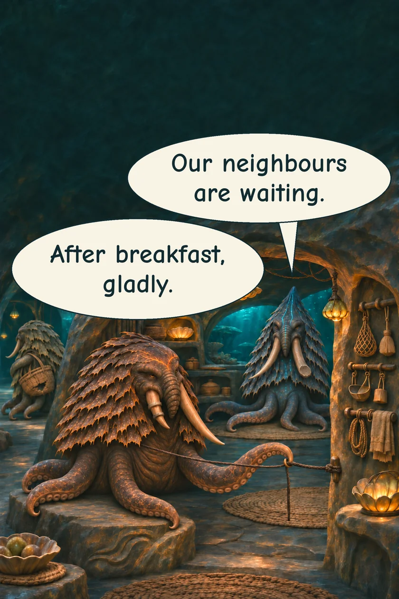
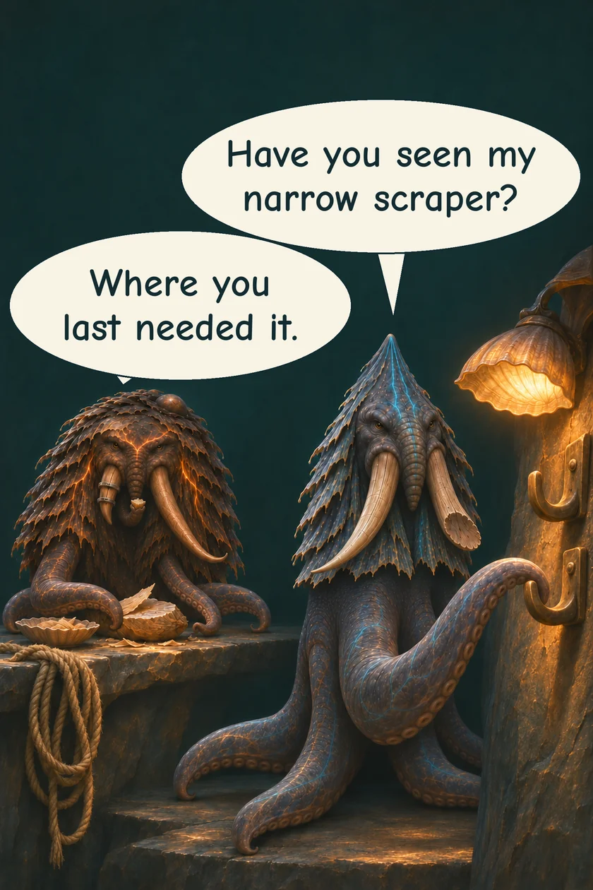
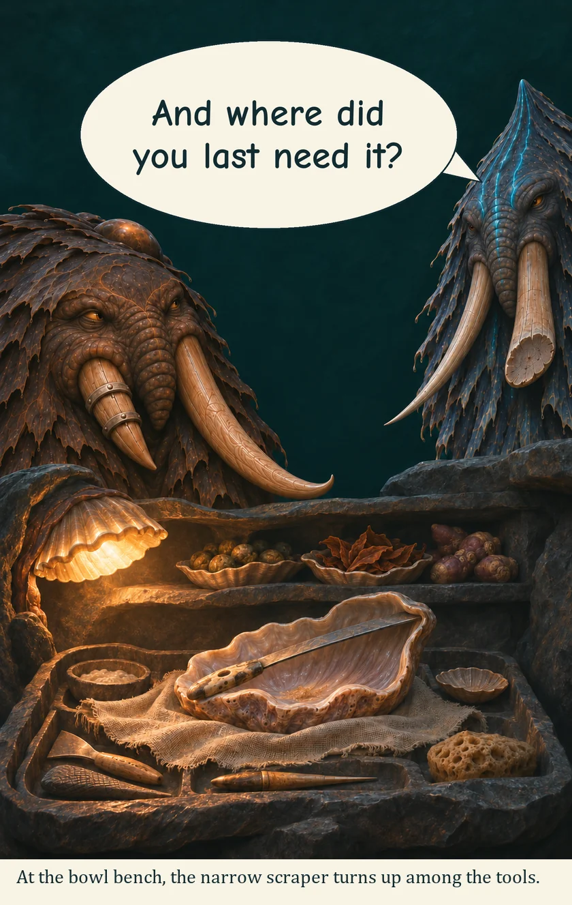
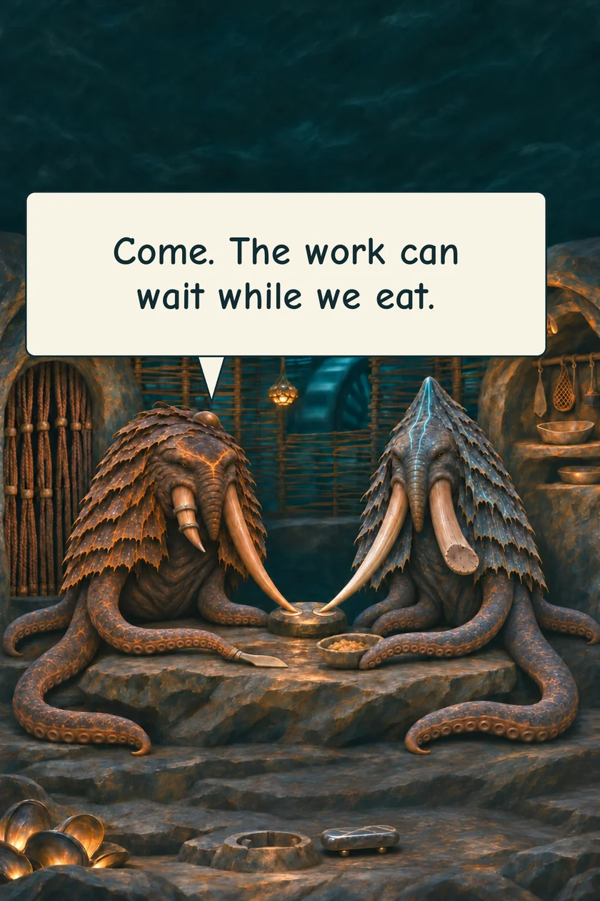

THE ORUUN · TEN YEARS BEFORE HUMANITY AWAKENS
Where Did You Last Need It?
Mera and Varo have shared a home long enough to mislay things together.
MERA · Mill keeperVARO · Road guide




The scraper is back among the bowls. For a little while, so are they.
Read the words
Our neighbours are waiting.
After breakfast, gladly.
Have you seen my narrow scraper?
Where you last needed it.
At the bowl bench, the narrow scraper turns up among the tools.
And where did you last need it?
Come. The work can wait while we eat.